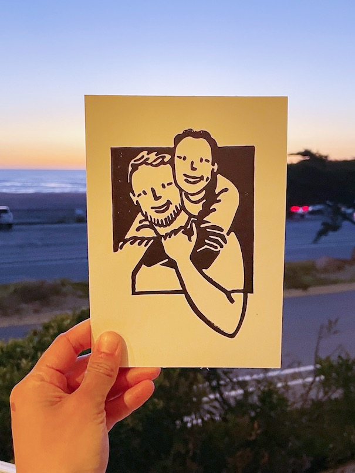
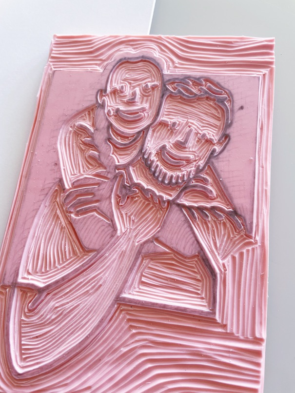
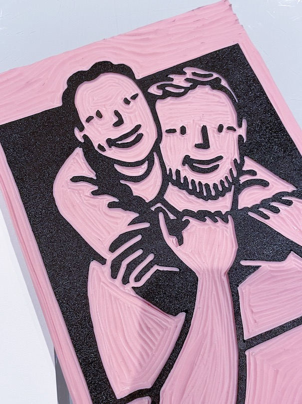
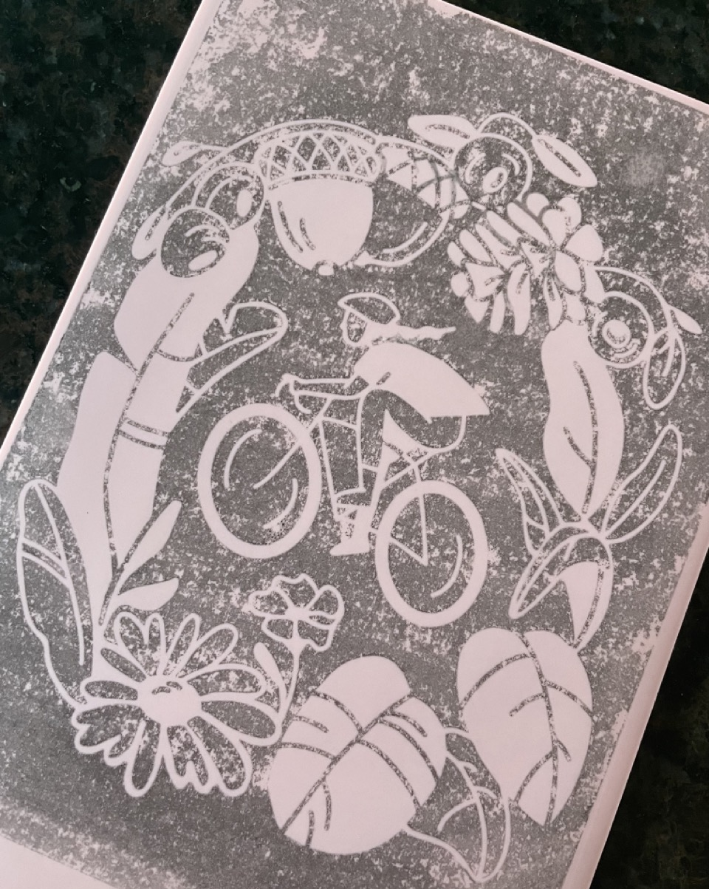
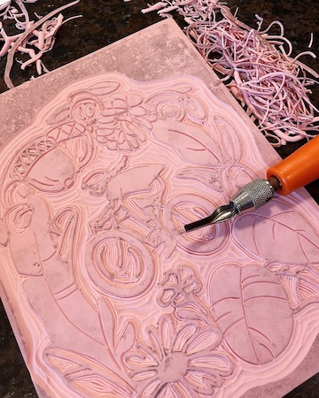
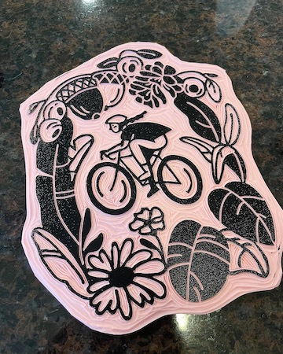

Printmaking
I'm not quite sure what got me into linocutting. Perhaps my penchant for detailed, manual things? Or my desire to take production into my own hands and share my artwork in a tangbile format? Either way, I'm journeying into the exciting world of printmaking as a potential first step towards creating my ~Etsy Empire~
The Test Piece: a portrait
I need a low-stakes design for my first project - something that was just for me without any pressure of selling it! I drew a portrait of Shep & myself on my iPad, traced over the screen onto a piece of paper, and did the "graphite scribble" method to transfer the drawing onto my Speedball rubber linoleum block... and it turned out alright!
Lessons learned: I need a better way to transfer drawings onto the carving block. Also, this is a lot of fun.

Lessons learned: I need a better way to transfer drawings onto the carving block. Also, this is a lot of fun.


"Reggie on a Roll": East Coast Greenway Alliance fundraising print
Up next: making something that people might actually PURCHASE?!?! I've made countless physical art pieces but actually never sold anything before. I wasn't technically selling this -- I mailed a free print to anyone who donated $20+ to the East Coast Greenway Alliance (the organization who made my bike trip possible!) -- but it was actually a rather scary experience making stuff for others and feeling stressed about getting everything perfect.
I did try a new transfer method - I printed my design with a laser printer (thank you SF public library for free printing!), then used nail polish remover to transfer the ink onto the rubber block. Worked perfectly! See image below for the transfer results. I also realized that the water-based Speedball ink had a tendency to rub off on my fingers / on other items, so I used a Krylon matte spray finisher to hopefully keep the ink from running.
Lessons learned: USPS can ship a print in a flat mailer envelope for about $1.50! Also, consider archival ink or eventually oil-based ink for a nicer finish. Also, don't use plain old cardstock, probably want a printmaking-specific paper. Also probably should get one of those Pfeil tools for more precise detailed cuts. Also, this really is insanely fun.
Donate & Get this print!
Lessons learned: USPS can ship a print in a flat mailer envelope for about $1.50! Also, consider archival ink or eventually oil-based ink for a nicer finish. Also, don't use plain old cardstock, probably want a printmaking-specific paper. Also probably should get one of those Pfeil tools for more precise detailed cuts. Also, this really is insanely fun.
Donate & Get this print!




Previous Project
Climbing Wall
Next Project
Nomad weaving